native-r1
Untouched framebuffer originals. Native window 960×600; integrated framebuffer 960×540. Read each JSON for actual phase, state and fixture scope.
01-package-title-idle-a.png · stateNative navigation / observed loading phase.
02-package-title-idle-b.png · stateNative navigation / observed loading phase.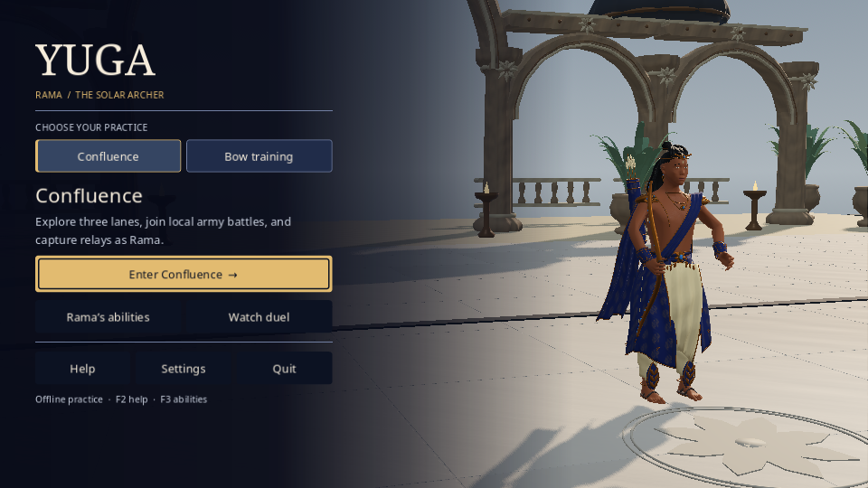
P01-native-settings-edited.png · stateNative navigation / observed loading phase.
P02-native-piercing-dawn-remap.png · stateNative navigation / observed loading phase.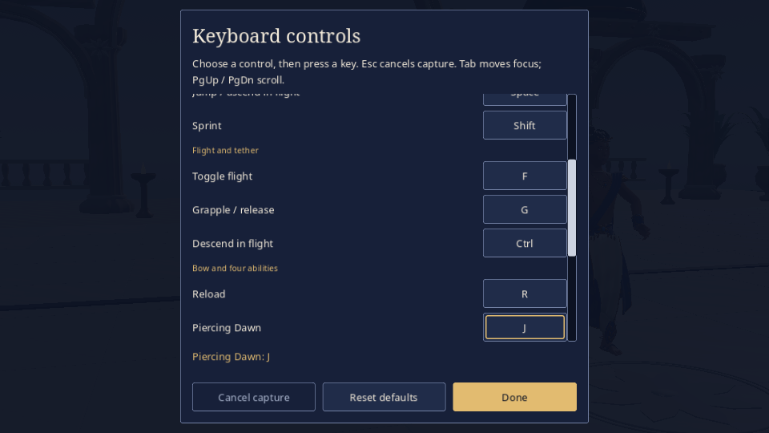
P03-native-guide-preferences-saved.png · stateNative navigation / observed loading phase.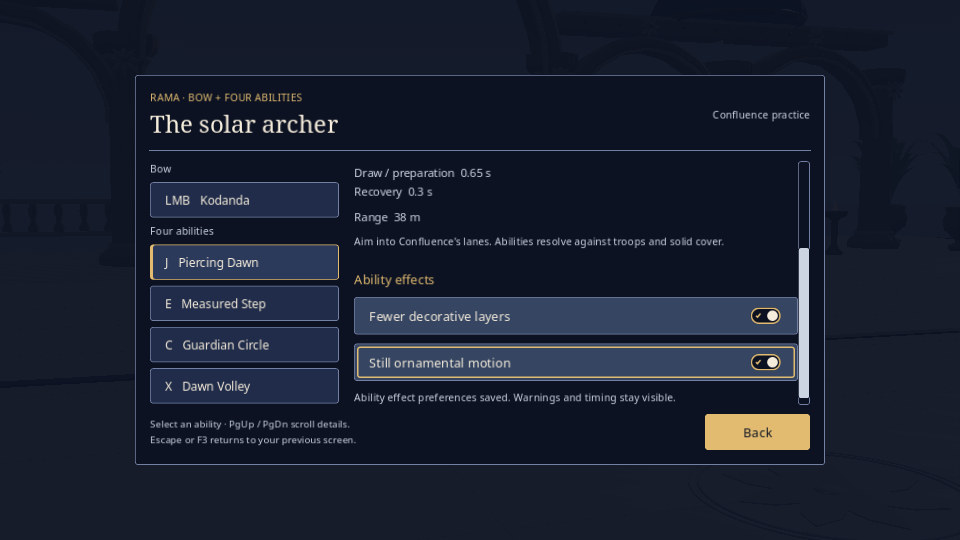
03-package-help.png · stateNative navigation / observed loading phase.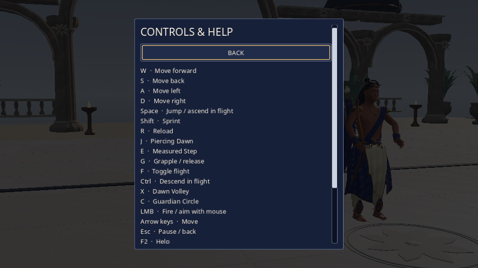
04-package-training.png · stateNative navigation / observed loading phase.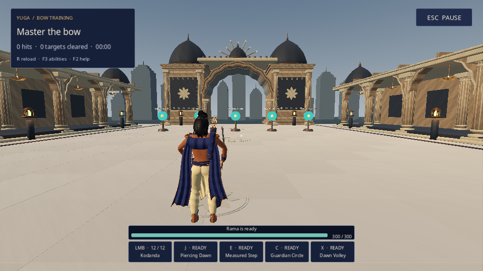
05-package-training-settings.png · stateNative navigation / observed loading phase.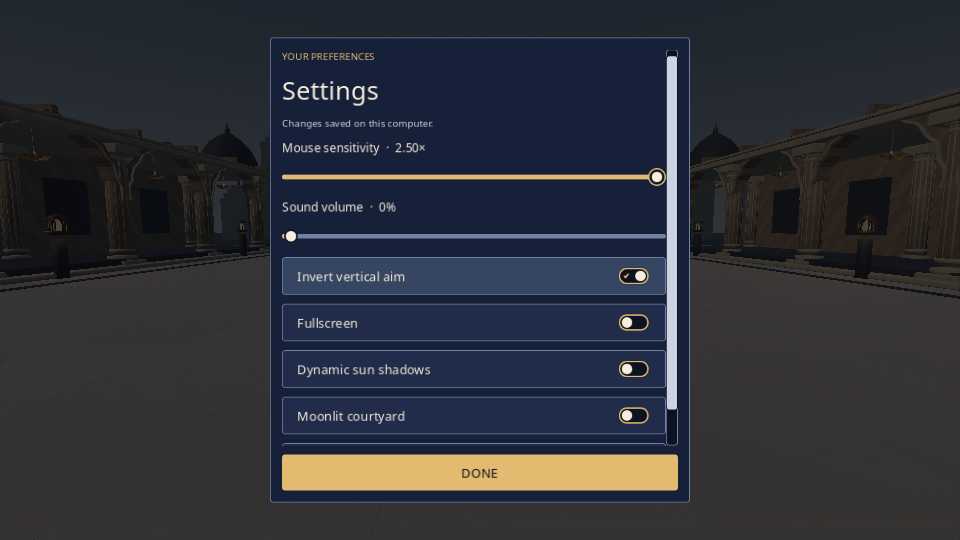
06-package-film.png · stateNative navigation / observed loading phase.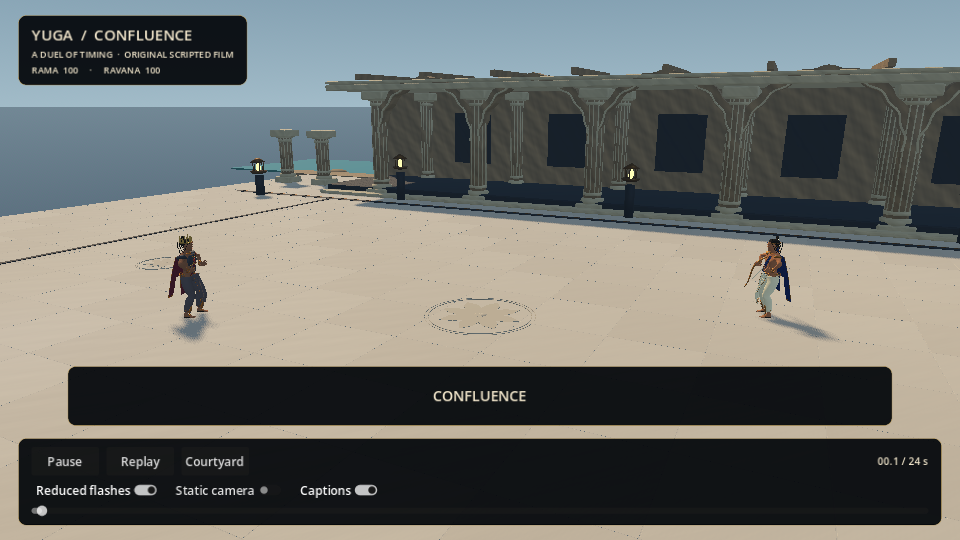
07-package-film-return-selection.png · stateNative navigation / observed loading phase.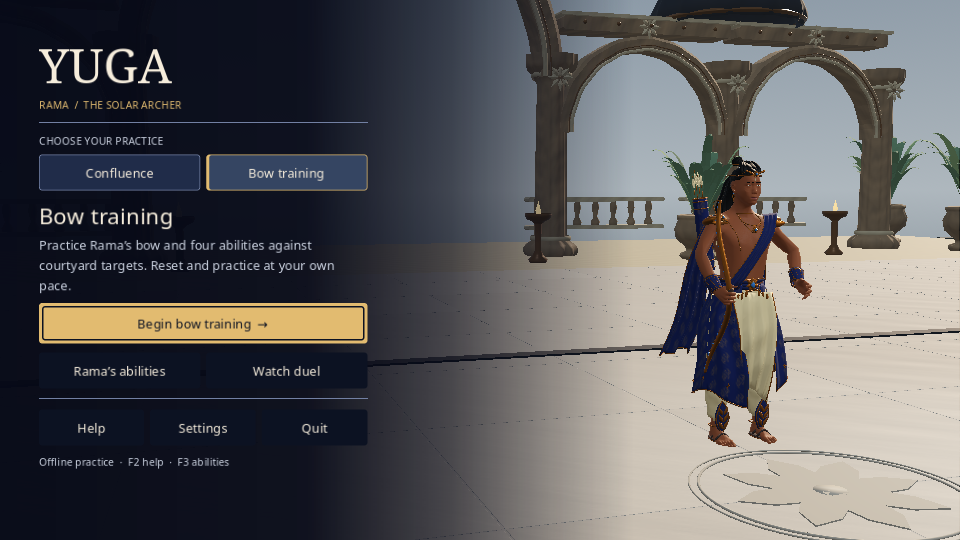
08-package-world-live.png · stateNative navigation / observed loading phase.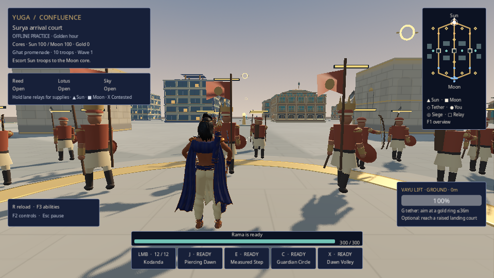
09-package-overview-unreleased-a.png · stateNative navigation / observed loading phase.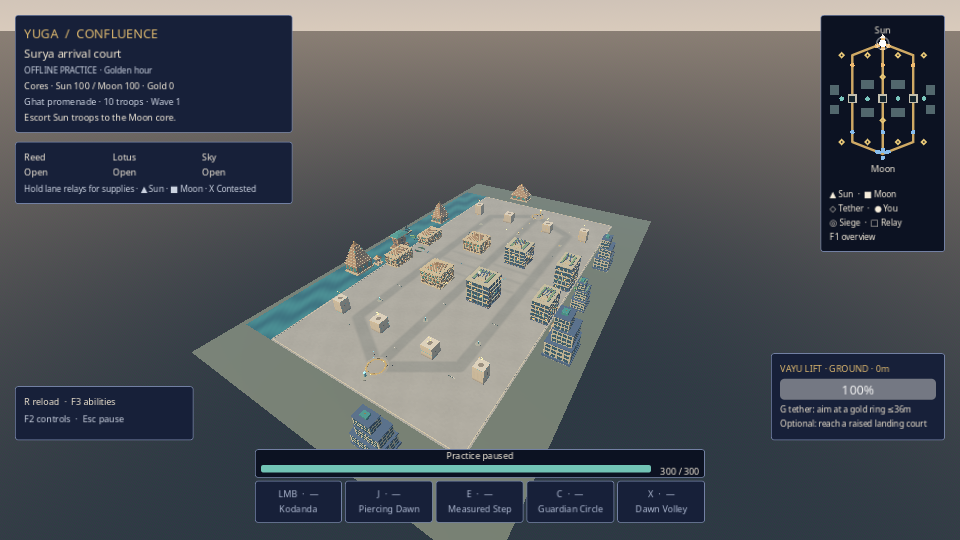
10-package-overview-unreleased-b.png · stateNative navigation / observed loading phase.
11-package-overview-resumed-release.png · stateNative navigation / observed loading phase.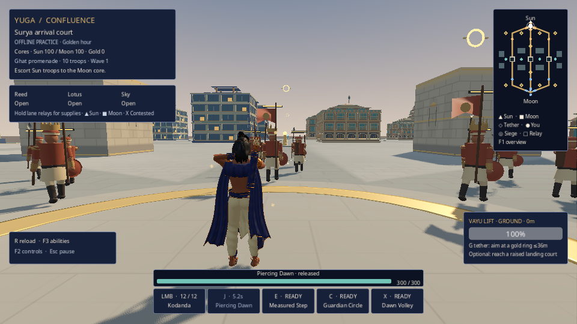
P04-world-guide-loaded-preferences.png · stateNative navigation / observed loading phase.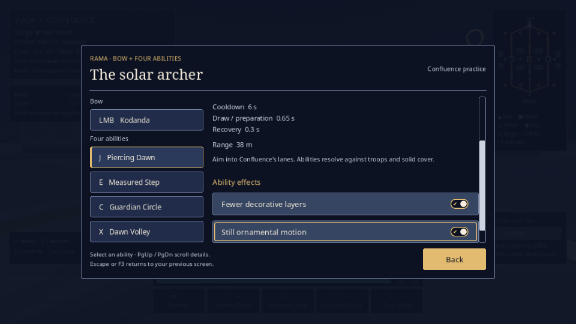
P05-world-muted-sound-and-return.png · stateNative navigation / observed loading phase.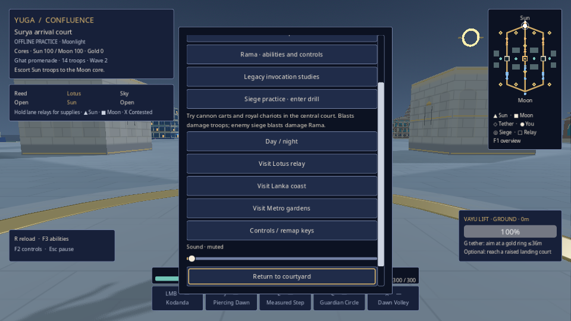
P06-returned-title-settings.png · stateNative navigation / observed loading phase.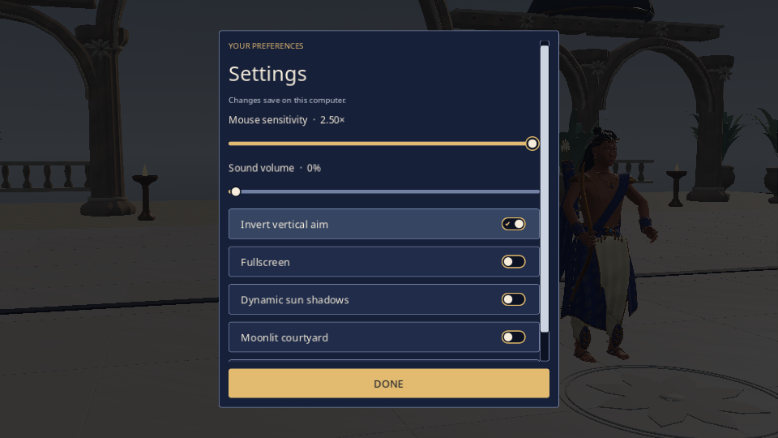
auto-constructing-1.png · stateNative navigation / observed loading phase. auto-constructing-2.png · stateNative navigation / observed loading phase.
auto-constructing-2.png · stateNative navigation / observed loading phase. auto-constructing-3.png · stateNative navigation / observed loading phase.
auto-constructing-4.png · stateNative navigation / observed loading phase.
auto-constructing-5.png · stateNative navigation / observed loading phase.
auto-constructing-3.png · stateNative navigation / observed loading phase.
auto-constructing-4.png · stateNative navigation / observed loading phase.
auto-constructing-5.png · stateNative navigation / observed loading phase. auto-loading-1.png · stateNative navigation / observed loading phase.
auto-loading-1.png · stateNative navigation / observed loading phase. auto-loading-2.png · stateNative navigation / observed loading phase.
auto-loading-3.png · stateNative navigation / observed loading phase.
auto-loading-4.png · stateNative navigation / observed loading phase.
auto-loading-5.png · stateNative navigation / observed loading phase.
auto-queued-1.png · stateNative navigation / observed loading phase.
auto-loading-2.png · stateNative navigation / observed loading phase.
auto-loading-3.png · stateNative navigation / observed loading phase.
auto-loading-4.png · stateNative navigation / observed loading phase.
auto-loading-5.png · stateNative navigation / observed loading phase.
auto-queued-1.png · stateNative navigation / observed loading phase. auto-queued-2.png · stateNative navigation / observed loading phase.
auto-queued-3.png · stateNative navigation / observed loading phase.
auto-queued-4.png · stateNative navigation / observed loading phase.
auto-queued-5.png · stateNative navigation / observed loading phase.
auto-queued-2.png · stateNative navigation / observed loading phase.
auto-queued-3.png · stateNative navigation / observed loading phase.
auto-queued-4.png · stateNative navigation / observed loading phase.
auto-queued-5.png · stateNative navigation / observed loading phase.